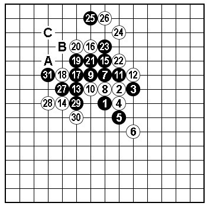
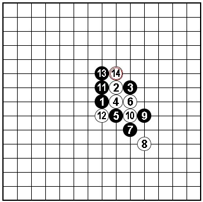
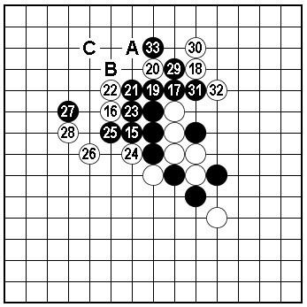

在学习定式的过程中如何活学活用举一反三？这是初学者比较关心的问题。下面我们来看一个定式常型学用的例子。

基本图：取材《基础定式》峡月、溪月篇第11图，黑15以下的追胜技巧经常在实战中出现，有必要熟练掌握。过程中25是左右逢源的手筋。黑27以下按照A~C的次序简单胜。本图的变化是双方的最强应接，对于黑15后白棋其他防点的变化，由于黑较容易胜，可以作为初学者锻炼计算之用。

图二：在熟练掌握基本图的基础上，请目算此形黑15以下追胜过程中的各种变化和结果。同时比较棋形差异、盘端等因素对胜法是否有影响？

图三：本图是上图的答案，35以下按照A~C次序胜。
图四：本图选自笔者若干年前的实战对局。当时，白14~18变化刚开始流行。一次短时限的实战中，对手走白20新手，因为没有准备。临场构思了21~33的下法。这个变化可以分为两部分。
一、21~30局部告一段落，在熟悉基本图的基础上，很容易发现黑棋这样下是无法取胜的（大家有兴趣可以摆摆，白棋上面有反先手段）。但黑棋这样交换留下了种种余味，并且白棋的棋形结构不佳，黑棋可以继续做棋。
二、黑31、33是有趣的想法。首先，31时预计白32是一般分寸的防守（对手也是这样下的）。当黑33时，白34已不能防A或B点了，那样黑左边C~I的变化可以成立（33解决了白棋反先的手段）。
如此，局面黑有趣。
以上构思和计算的过程并不复杂，主要得益于对基本技巧和棋形的熟练掌握。（未完待续）